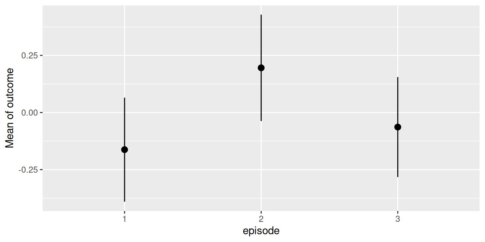
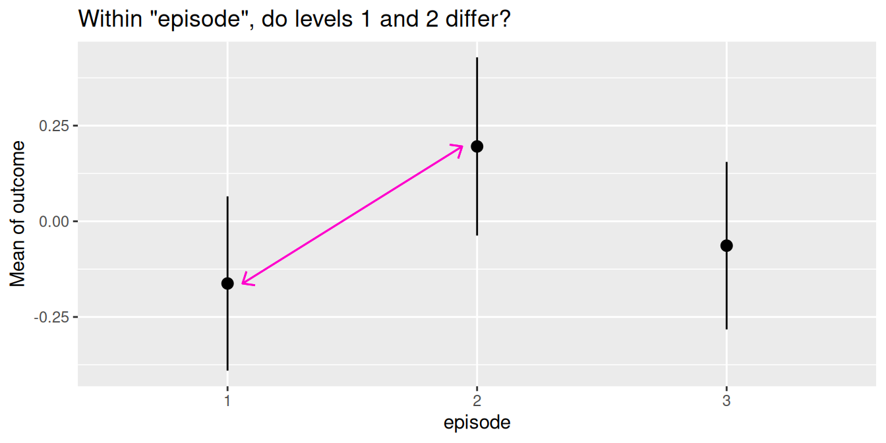
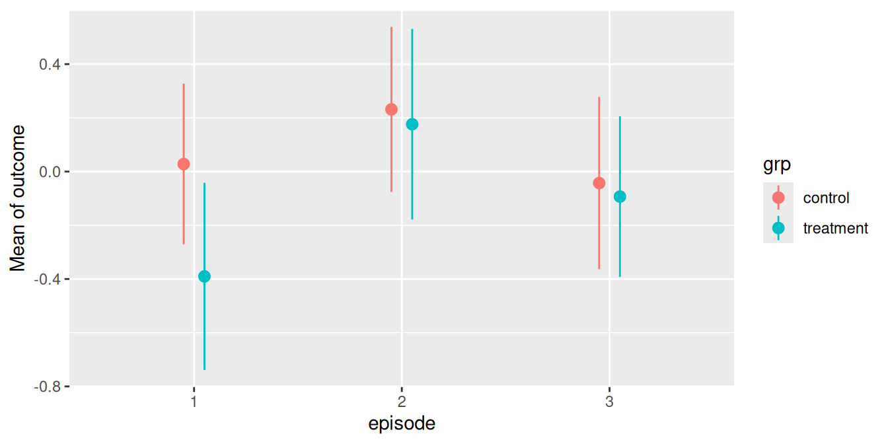
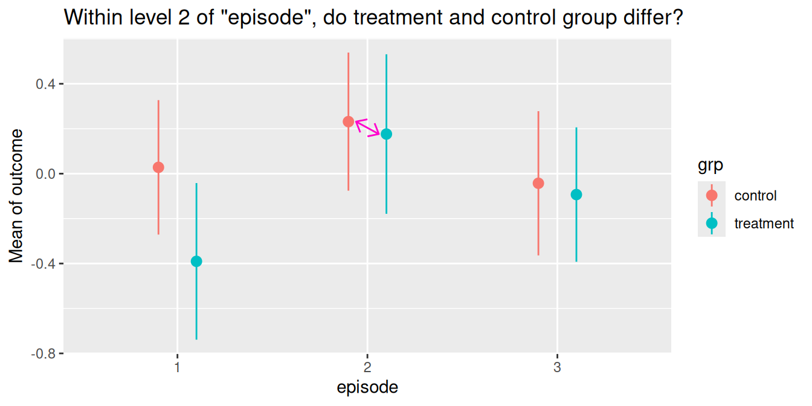
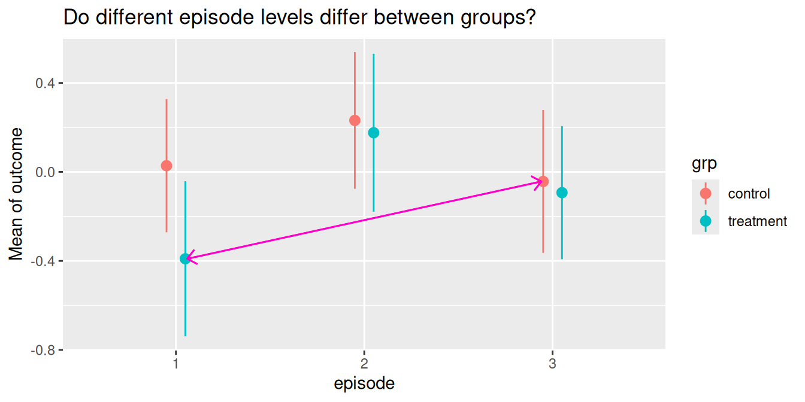
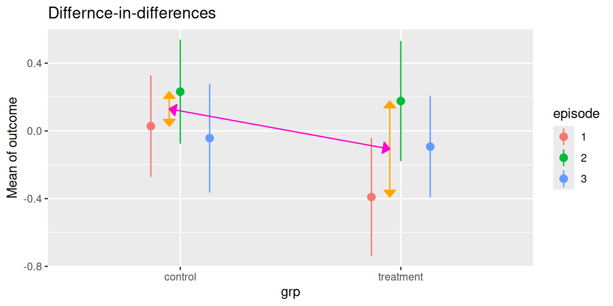

Contrasts and pairwise comparisons
Source:vignettes/introduction_comparisons_1.Rmd
introduction_comparisons_1.RmdThis vignette is the first in a 5-part series:
Contrasts and Pairwise Comparisons
Comparisons of Slopes, Floodlight and Spotlight Analysis (Johnson-Neyman Intervals)
Hypothesis testing for categorical predictors
A reason to compute adjusted predictions (or estimated marginal means) is to help understanding the relationship between predictors and outcome of a regression model. The next step, which often follows this, is to see if there are statistically significant differences. These could be, for example, differences between groups, i.e. between the levels of categorical predictors or whether trends differ significantly from each other.
The modelbased package provides a function,
estimate_contrasts(), which does exactly this: testing
differences of predictions or marginal means for statistical
significance. This is usually called contrasts or
(pairwise) comparisons, or marginal effects (if the
difference refers to a one-unit change of predictors). This vignette
shows some examples how to use the estimate_contrasts()
function and how to test whether differences in predictions are
statistically significant.
First, different examples for pairwise comparisons are shown, later we will see how to test differences-in-differences (in the emmeans package, also called interaction contrasts).
Within episode, do levels differ?
We start with a toy example, where we have a linear model with two categorical predictors. No interaction is involved for now.
We display a simple table of regression coefficients, created with
model_parameters() from the parameters
package.
library(modelbased)
library(parameters)
library(ggplot2)
set.seed(123)
n <- 200
d <- data.frame(
outcome = rnorm(n),
grp = as.factor(sample(c("treatment", "control"), n, TRUE)),
episode = as.factor(sample(1:3, n, TRUE)),
sex = as.factor(sample(c("female", "male"), n, TRUE, prob = c(0.4, 0.6)))
)
model1 <- lm(outcome ~ grp + episode, data = d)
model_parameters(model1)
#> Parameter | Coefficient | SE | 95% CI | t(196) | p
#> ---------------------------------------------------------------------
#> (Intercept) | -0.08 | 0.13 | [-0.33, 0.18] | -0.60 | 0.552
#> grp [treatment] | -0.17 | 0.13 | [-0.44, 0.09] | -1.30 | 0.197
#> episode [2] | 0.36 | 0.16 | [ 0.03, 0.68] | 2.18 | 0.031
#> episode [3] | 0.10 | 0.16 | [-0.22, 0.42] | 0.62 | 0.538Predictions
Let us look at the adjusted predictions.
my_predictions <- estimate_means(model1, "episode")
my_predictions
#> Estimated Marginal Means
#>
#> episode | Mean (CI)
#> -----------------------------
#> 1 | -0.16 (-0.39, 0.07)
#> 2 | 0.20 (-0.04, 0.43)
#> 3 | -0.06 (-0.28, 0.16)
#>
#> Variable predicted: outcome
#> Predictors modulated: episode
#> Predictors averaged: grp
plot(my_predictions)
We now see that, for instance, the predicted outcome when
espisode = 2 is 0.2.
Pairwise comparisons
We could now ask whether the predicted outcome for
episode = 1 is significantly different from the predicted
outcome at episode = 2.

To do this, we use the estimate_contrasts() function. By
default, a pairwise comparison is performed. You can specify other
comparisons as well, using the comparison argument. For
now, we go on with the simpler example of contrasts or pairwise
comparisons.
# argument `comparison` defaults to "pairwise"
estimate_contrasts(model1, "episode")
#> Marginal Contrasts Analysis
#>
#> Level1 | Level2 | Difference (CI) | p
#> ---------------------------------------------
#> 2 | 1 | 0.36 ( 0.03, 0.68) | 0.031
#> 3 | 1 | 0.10 (-0.22, 0.42) | 0.538
#> 3 | 2 | -0.26 (-0.58, 0.06) | 0.112
#>
#> Variable predicted: outcome
#> Predictors contrasted: episode
#> Predictors averaged: grp
#> p-values are uncorrected.For our quantity of interest, the contrast between episode levels 2
and 1, we see the value 0.36, which is exactly the difference between
the predicted outcome for episode = 1 (-0.16) and
episode = 2 (0.20). The related p-value is 0.031,
indicating that the difference between the predicted values of our
outcome at these two levels of the factor episode is indeed
statistically significant.
We can also define “representative values” via the
contrast or by arguments. For example, we
could specify the levels of episode directly, to simplify
the output:
estimate_contrasts(model1, contrast = "episode=c(1,2)")
#> Marginal Contrasts Analysis
#>
#> Level1 | Level2 | Difference (CI) | p
#> -------------------------------------------
#> 2 | 1 | 0.36 (0.03, 0.68) | 0.031
#>
#> Variable predicted: outcome
#> Predictors contrasted: episode=c(1,2)
#> Predictors averaged: grp
#> p-values are uncorrected.Does same level of episode differ between groups?
The next example includes a pairwise comparison of an interaction between two categorical predictors.
model2 <- lm(outcome ~ grp * episode, data = d)
model_parameters(model2)
#> Parameter | Coefficient | SE | 95% CI | t(194) | p
#> -----------------------------------------------------------------------------------
#> (Intercept) | 0.03 | 0.15 | [-0.27, 0.33] | 0.18 | 0.853
#> grp [treatment] | -0.42 | 0.23 | [-0.88, 0.04] | -1.80 | 0.074
#> episode [2] | 0.20 | 0.22 | [-0.23, 0.63] | 0.94 | 0.350
#> episode [3] | -0.07 | 0.22 | [-0.51, 0.37] | -0.32 | 0.750
#> grp [treatment] × episode [2] | 0.36 | 0.33 | [-0.29, 1.02] | 1.09 | 0.277
#> grp [treatment] × episode [3] | 0.37 | 0.32 | [-0.27, 1.00] | 1.14 | 0.254Predictions
First, we look at the predicted values of outcome for all combinations of the involved interaction term.
my_predictions <- estimate_means(model2, by = c("episode", "grp"))
my_predictions
#> Estimated Marginal Means
#>
#> episode | grp | Mean (CI)
#> ------------------------------------------
#> 1 | control | 0.03 (-0.27, 0.33)
#> 2 | control | 0.23 (-0.08, 0.54)
#> 3 | control | -0.04 (-0.36, 0.28)
#> 1 | treatment | -0.39 (-0.74, -0.04)
#> 2 | treatment | 0.18 (-0.18, 0.53)
#> 3 | treatment | -0.09 (-0.39, 0.21)
#>
#> Variable predicted: outcome
#> Predictors modulated: episode, grp
plot(my_predictions)
Pairwise comparisons
We could now ask whether the predicted outcome for
episode = 2 is significantly different depending on the
level of grp? In other words, do the groups
treatment and control differ when
episode = 2?

Again, to answer this question, we calculate all pairwise comparisons, i.e. the comparison (or test for differences) between all combinations of our focal predictors. The focal predictors we’re interested here are our two variables used for the interaction.
# we want "episode = 2-2" and "grp = control-treatment"
estimate_contrasts(model2, contrast = c("episode", "grp"))
#> Marginal Contrasts Analysis
#>
#> Level1 | Level2 | Difference (CI) | p
#> ---------------------------------------------------------
#> 1, treatment | 1, control | -0.42 (-0.88, 0.04) | 0.074
#> 2, control | 1, control | 0.20 (-0.23, 0.63) | 0.350
#> 2, treatment | 1, control | 0.15 (-0.32, 0.61) | 0.529
#> 3, control | 1, control | -0.07 (-0.51, 0.37) | 0.750
#> 3, treatment | 1, control | -0.12 (-0.54, 0.30) | 0.573
#> 2, control | 1, treatment | 0.62 ( 0.16, 1.09) | 0.009
#> 2, treatment | 1, treatment | 0.57 ( 0.07, 1.06) | 0.026
#> 3, control | 1, treatment | 0.35 (-0.13, 0.82) | 0.150
#> 3, treatment | 1, treatment | 0.30 (-0.16, 0.76) | 0.203
#> 2, treatment | 2, control | -0.06 (-0.52, 0.41) | 0.816
#> 3, control | 2, control | -0.27 (-0.72, 0.17) | 0.225
#> 3, treatment | 2, control | -0.32 (-0.75, 0.10) | 0.137
#> 3, control | 2, treatment | -0.22 (-0.70, 0.26) | 0.368
#> 3, treatment | 2, treatment | -0.27 (-0.73, 0.19) | 0.254
#> 3, treatment | 3, control | -0.05 (-0.49, 0.39) | 0.821
#>
#> Variable predicted: outcome
#> Predictors contrasted: episode, grp
#> p-values are uncorrected.For our quantity of interest, the contrast between groups
treatment and control when
episode = 2 is 0.06. We find this comparison in row 10 of
the above output.
As we can see, estimate_contrasts() returns pairwise
comparisons of all possible combinations of factor levels from our focal
variables. If we’re only interested in a very specific comparison, we
have two options to simplify the output:
We could directly formulate this comparison. Therefore, we need to know the parameters of interests (see below).
We pass specific values or levels to the
contrastargument.
Option 1: Directly specify the comparison
estimate_means(model2, by = c("episode", "grp"))
#> Estimated Marginal Means
#>
#> episode | grp | Mean (CI)
#> ------------------------------------------
#> 1 | control | 0.03 (-0.27, 0.33)
#> 2 | control | 0.23 (-0.08, 0.54)
#> 3 | control | -0.04 (-0.36, 0.28)
#> 1 | treatment | -0.39 (-0.74, -0.04)
#> 2 | treatment | 0.18 (-0.18, 0.53)
#> 3 | treatment | -0.09 (-0.39, 0.21)
#>
#> Variable predicted: outcome
#> Predictors modulated: episode, grpIn the above output, each row is considered as one coefficient of
interest. Our groups we want to include in our comparison are rows two
(grp = control and episode = 2) and five
(grp = treatment and episode = 2), so our
“quantities of interest” are b2 and b5. Our
null hypothesis we want to test is whether both predictions are equal,
i.e. comparison = "b5 = b2" (we could also specify
"b2 = b5", results would be the same, just signs are
switched). We can now calculate the desired comparison directly:
# compute specific contrast directly
estimate_contrasts(model2, contrast = c("episode", "grp"), comparison = "b2 = b5")
#> Marginal Contrasts Analysis
#>
#> Parameter | Difference (CI) | p
#> --------------------------------------
#> b2=b5 | 0.06 (-0.41, 0.52) | 0.816
#>
#> Variable predicted: outcome
#> Predictors contrasted: episode, grp
#> p-values are uncorrected.
#> Parameters:
#> b2 = episode [2], grp [control]
#> b5 = episode [2], grp [treatment]Option 2: Specify values or levels
Again, using representative values for the contrast
argument, we can also simplify the output using an alternative
syntax:
# return pairwise comparisons for specific values, in
# this case for episode = 2 in both groups
estimate_contrasts(model2, contrast = c("episode=2", "grp"))
#> Marginal Contrasts Analysis
#>
#> Level1 | Level2 | Difference (CI) | p
#> -------------------------------------------------
#> treatment | control | -0.06 (-0.52, 0.41) | 0.816
#>
#> Variable predicted: outcome
#> Predictors contrasted: episode=2, grp
#> p-values are uncorrected.This is equivalent to the above example, where we directly specified
the comparison we’re interested in. However, the comparison
argument might provide more flexibility in case you want more complex
comparisons. See examples below.
Do different episode levels differ between groups?
We can repeat the steps shown above to test any combination of group levels for differences.
Pairwise comparisons
For instance, we could now ask whether the predicted outcome for
episode = 1 in the treatment group is
significantly different from the predicted outcome for
episode = 3 in the control group.

The contrast we are interested in is between episode = 1
in the treatment group and episode = 3 in the
control group. These are the predicted values in rows three
and four (c.f. above table of predicted values), thus we
comparison whether "b4 = b3".
estimate_contrasts(model2, contrast = c("episode", "grp"), comparison = "b4 = b3")
#> Marginal Contrasts Analysis
#>
#> Parameter | Difference (CI) | p
#> ---------------------------------------
#> b4=b3 | -0.35 (-0.82, 0.13) | 0.150
#>
#> Variable predicted: outcome
#> Predictors contrasted: episode, grp
#> p-values are uncorrected.
#> Parameters:
#> b4 = episode [1], grp [treatment]
#> b3 = episode [3], grp [control]Another way to produce this pairwise comparison, we can reduce the
table of predicted values by providing specific
values or levels in the by or contrast
argument:
estimate_means(model2, by = c("episode=c(1,3)", "grp"))
#> Estimated Marginal Means
#>
#> episode | grp | Mean (CI)
#> ------------------------------------------
#> 1 | control | 0.03 (-0.27, 0.33)
#> 3 | control | -0.04 (-0.36, 0.28)
#> 1 | treatment | -0.39 (-0.74, -0.04)
#> 3 | treatment | -0.09 (-0.39, 0.21)
#>
#> Variable predicted: outcome
#> Predictors modulated: episode=c(1,3), grpepisode = 1 in the treatment group and
episode = 3 in the control group refer now to
rows two and three in the reduced output, thus we also can obtain the
desired comparison this way:
estimate_contrasts(
model2,
contrast = c("episode = c(1, 3)", "grp"),
comparison = "b3 = b2"
)
#> Marginal Contrasts Analysis
#>
#> Parameter | Difference (CI) | p
#> ---------------------------------------
#> b3=b2 | -0.35 (-0.82, 0.13) | 0.150
#>
#> Variable predicted: outcome
#> Predictors contrasted: episode = c(1, 3), grp
#> p-values are uncorrected.
#> Parameters:
#> b3 = episode [1], grp [treatment]
#> b2 = episode [3], grp [control]Does difference between two levels of episode in the control group differ from difference of same two levels in the treatment group?
The comparison argument also allows us to compare
difference-in-differences (aka interaction contrasts). For
example, is the difference between two episode levels in one group
significantly different from the difference of the same two episode
levels in the other group?

As a reminder, we look at the table of predictions again:
estimate_means(model2, c("episode", "grp"))
#> Estimated Marginal Means
#>
#> episode | grp | Mean (CI)
#> ------------------------------------------
#> 1 | control | 0.03 (-0.27, 0.33)
#> 2 | control | 0.23 (-0.08, 0.54)
#> 3 | control | -0.04 (-0.36, 0.28)
#> 1 | treatment | -0.39 (-0.74, -0.04)
#> 2 | treatment | 0.18 (-0.18, 0.53)
#> 3 | treatment | -0.09 (-0.39, 0.21)
#>
#> Variable predicted: outcome
#> Predictors modulated: episode, grpThe first difference of episode levels 1 and 2 in the control group
refer to rows one and two in the above table (b1 and
b2). The difference for the same episode levels in the
treatment group refer to the difference between rows four and five
(b4 and b5). Thus, we have
b1 - b2 and b4 - b5, and our null hypothesis
is that these two differences are equal:
comparison = "(b1 - b2) = (b4 - b5)".
estimate_contrasts(
model2,
c("episode", "grp"),
comparison = "(b1 - b2) = (b4 - b5)"
)
#> Marginal Contrasts Analysis
#>
#> Parameter | Difference (CI) | p
#> ----------------------------------------
#> b1-b2=b4-b5 | 0.36 (-0.29, 1.02) | 0.277
#>
#> Variable predicted: outcome
#> Predictors contrasted: episode, grp
#> p-values are uncorrected.
#> Parameters:
#> b1 = episode [1], grp [control]
#> b2 = episode [2], grp [control]
#> b4 = episode [1], grp [treatment]
#> b5 = episode [2], grp [treatment]Let’s replicate this step-by-step:
- Predicted value of outcome for
episode = 1in the control group is 0.03. - Predicted value of outcome for
episode = 2in the control group is 0.23. - The first difference is 0.20.
- Predicted value of outcome for
episode = 1in the treatment group is -0.39. - Predicted value of outcome for
episode = 2in the treatment group is 0.18. - The second difference is -0.17.
- Our quantity of interest is the difference between these two differences, which is (considering rounding inaccuracy) 0.36. This difference is not statistically significant (p = 0.277).
Conclusion
While the current implementation in estimate_contrasts()
already covers many common use cases for testing contrasts and pairwise
comparison, there still might be the need for more sophisticated
comparisons. In this case, we recommend using the marginaleffects package
directly. Some further related recommended readings are the vignettes
about Comparisons
or Hypothesis
Tests.